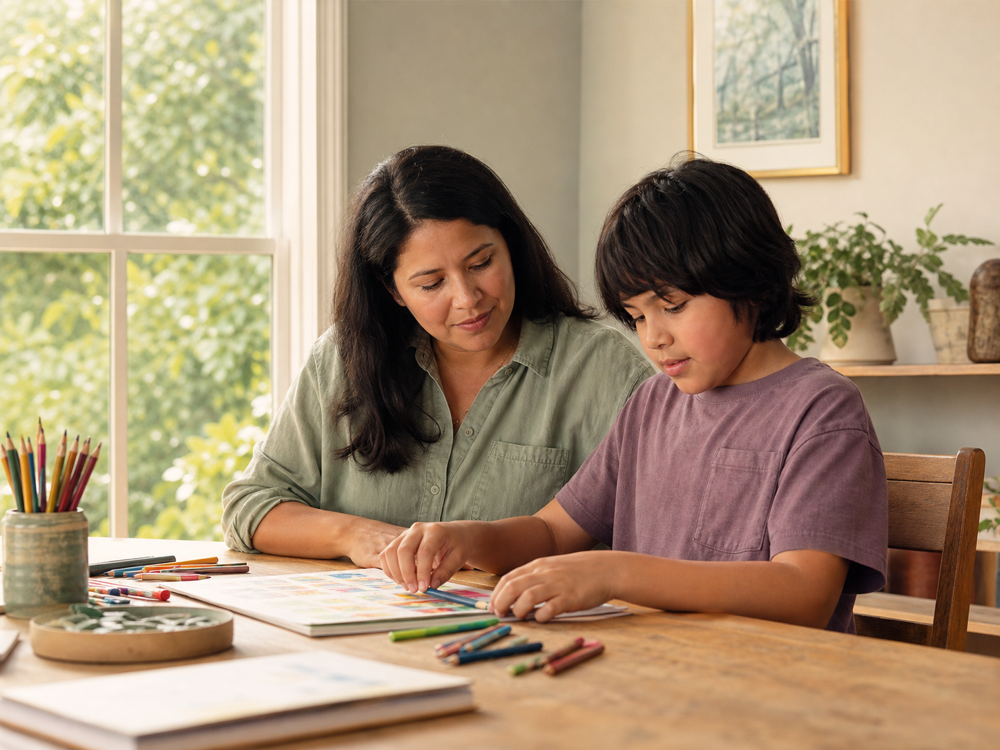

1. Register
Adults may register for themselves. A parent or guardian registers for anyone under 18.
A quiet, scheduled Rainbow Sanctuary wellbeing practice for autistic people and their families. It is designed to be optional, respectful, and accessible—without asking anyone to perform, disclose, or change who they are.
Every Tuesday · 23:00 Beijing (UTC+8)
Choose a weekly sessionSupport free access
We see autism as a diverse way of experiencing and organising the world—not a person to be fixed. Our working framework explores how gentle rhythm, sensory comfort, creativity, predictable structure, and respectful relationship may help a person and their family feel more supported.
These are principles we are actively learning from, not final answers or promises of a particular outcome. Every person has different needs, strengths, preferences, and sources of support.
Choose a highlighted Tuesday. Registration is free; we send the preparation note and reminders after the team reviews the request.
Adults may register for themselves. A parent or guardian registers for anyone under 18.
We send a simple reminder and preparation note. There is no Zoom session or requirement to attend live at launch.
Contributions help keep access open but are optional and never affect participation.